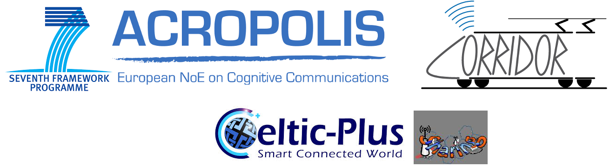

Overview
This research revolves around the study of interference management techniques in Heterogeneous Networks (HetNets) in order to improve the Quality of Service (QoS) of users as well as improve overall network performance. This research has overlapping goals with two French and European funded projects, viz. CORRIDOR (Cognitive Radio for Railway high-throughputs Dynamic and Opportunistic Spectrum Reuse) and SHARING (Self-organized Heterogeneous Advanced RadIo Networks Generation), respectively. The work carried out has contributed to both of these projects with regard to advanced receiver architectures for interference management and spectrally efficient relay strategies. In particular, techniques have been developed for low-complex receiver algorithm design for high-order multi-antenna systems capable of enabling high-throughputs in the presence of strong interferers. In addition, a spectrally efficient HD relay strategy has been practically implemented in different scenarios in an effort to bridge the gap between theory and practice. All of the aforementioned research themes have been simulated in the physical layer using libraries from an end-to-end LTE simulator, i.e the OpenAir interface. The results will serve as an initial effort to enable the practical implementation of such algorithms in the evolving 4G air-interface standard and the developing 5G standard
Associated Projects

Publications
Other Outputs
Master's Thesis
Optimisation of adaptive localisation techniuqes for cognitive radio (pdf)
Spectrum, environment and location awareness are key characteristics of cognitive radio (CR). Knowledge of a user’s location as well as the surrounding environment type may enhance various CR tasks, such as spectrum sensing, dynamic channel allocation and interference management. This dissertation deals with the optimisation of adaptive localisation techniques for CR. The first part entails the development and evaluation of an efficient bandwidth determination (BD) model, which is a key component of the cognitive positioning system. This bandwidth efficiency is achieved using the Cramer-Rao lower bound derivations for a single-input-multiple-output (SIMO) antenna scheme. The performances of the single-input-single-output (SISO) and SIMO BD models are compared using three different generalised environmental models, viz. rural, urban and suburban areas. In the case of all three scenarios, the results reveal a marked improvement in the bandwidth efficiency for a SIMO antenna positioning scheme, especially for the 1×3 urban case, where a 62% root mean square error (RMSE) improvement over the SISO system is observed. The second part of the dissertation involves the presentation of a multiband time-ofarrival (TOA) positioning technique for CR. The RMSE positional accuracy is evaluated using a fixed and dynamic bandwidth availability model. In the case of the fixed bandwidth availability model, the multiband TOA positioning model is initially evaluated using the two-step maximum-likelihood (TSML) location estimation algorithm for a scenario where line-of-sight represents the dominant signal path. Thereafter, a more realistic dynamic bandwidth availability model has been proposed, which is based on data obtained from an ultra-high frequency spectrum occupancy measurement campaign. The RMSE performance is then verified using the non-linear least squares, linear least squares and TSML location estimation techniques, using five different bandwidths. The proposed multiband positioning model performs well in poor signal-to-noise ratio conditions (-10 dB to 0 dB) when compared to a single band TOA system. These results indicate the advantage of opportunistic TOA location estimation in a CR environment.